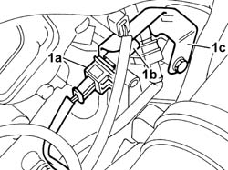
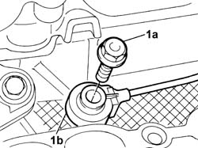

5510C44 KNOCK SENSOR (ONE) - R+R
- Path
- Procedures > 55 ELECTRICAL EQUIPMENT > 5510 ENGINE IGNITION > 5510C COIL, ECU, SENSORS > 5510C44 KNOCK SENSOR (ONE) - R+R
- Kind
- repair procedure (removal / refitting; the operation number is the code)
- Applies to
- engines: 3.0 24V V6; all production periods
- Interactive page
- https://sloeber94.github.io/elrnDB-fUlss/en/#/179007545
Applies to: engines: 3.0 24V V6; all production periods
 Removing
Removing
 Refitting
Refitting- Disconnect the negative battery terminal.
Description | Connector | |
|---|---|---|
. | Battery | A001B |
Op. 5010B18 CLIMATE CONTROL UNIT AIR INTAKE - R.R.
Op. 5050B34 WINDSCREEN WIPER ARM/S COMPLETE WITH BLADE - R+R
Op. 7210E22 WINDSCREEN BASE TRIM
See in Op. 1088B10
Op. 1016A42 LEFT HAND CYLINDER HEAD IGNITION COIL COVER - R+R
See in Op. 1068A54
Op. 1048A47 SLEEVE FROM RIGID PIPE TO THROTTLE BODY - R R
Op. 1072B50 SLEEVES CONNECTING AIR CAPACITY BOX TO INLET MANIFOLD IS - R+R
Op. 1056B62 L/H AND R/H FUEL PIPE ASSEMBLY - WITH INJECTORS - R + R
See in Op. 1072B10
- Working from the flywheel side:
1. Disconnect the electrical connection (1a) and release the connector (1b) for the detonation sensor from the mounting bracket (1c).
Description | Connector | |
|---|---|---|
1b | Detonation sensor | K050 |

Applies to: engines: 3.0 24V V6; all production periods
1. Undo the fixing bolt (1a) and remove the detonation sensor (1b) from the cylinder block/crankcase.

Applies to: engines: 3.0 24V V6; all production periods
Refitting
Removing- Fit the detonation sensor and tighten the fixing bolt.
- Position the connector for the detonation sensor on the mounting bracket.
- Connect the electrical connection for the knock sensor.
Description | Connector | |
|---|---|---|
. | Detonation sensor | K050 |
See in Op. 1072B10
Op. 1056B62 L/H AND R/H FUEL PIPE ASSEMBLY - WITH INJECTORS - R + R
Op. 1072B50 SLEEVES CONNECTING AIR CAPACITY BOX TO INLET MANIFOLD IS - R+R
See in Op. 1068A54
Op. 1016A42 LEFT HAND CYLINDER HEAD IGNITION COIL COVER - R+R
See in Op. 1088B10
Op. 7210E22 WINDSCREEN BASE TRIM
Op. 5050B34 WINDSCREEN WIPER ARM/S COMPLETE WITH BLADE - R+R
Op. 5010B18 CLIMATE CONTROL UNIT AIR INTAKE - R.R.
- Connect the negative battery terminal.
Description | Connector | |
|---|---|---|
. | Battery | A001B |
Topics linked from this page (8)
- 0010T21 ENGINE COOLANT - CHECK DENSITY AND CHANGE, IF NECESSARY
- 1016A42 LEFT HAND CYLINDER HEAD IGNITION COIL COVER - R+R
- 1048A47 SLEEVE FROM RIGID PIPE TO THROTTLE BODY - R R
- 1056B62 L/H AND R/H FUEL PIPE ASSEMBLY - WITH INJECTORS - R + R
- 1072B50 SLEEVES CONNECTING AIR CAPACITY BOX TO INLET MANIFOLD IS - R+R
- 5010B18 CLIMATE CONTROL UNIT AIR INTAKE - R.R.
- 5050B34 WINDSCREEN WIPER ARM/S COMPLETE WITH BLADE - R+R
- 7210E22 WINDSCREEN BASE TRIM